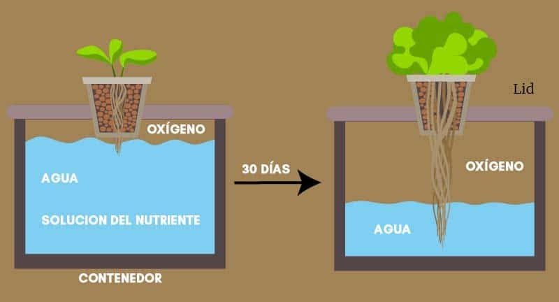

Que es la Hidroponía
La hidroponía es un método de cultivo sin suelo que utiliza soluciones acuosas para suministrar nutrientes a las plantas. Nuestro sistema de huertos hidropónicos con sensores utiliza una combinación de agua, oxígeno y nutrientes esenciales para estimular el crecimiento de las plantas.
Las raíces de las plantas se sumergen en una solución acuosa llena de nutrientes, y una bomba de aire suministra oxígeno para mantener un ambiente saludable para el crecimiento de las plantas.
